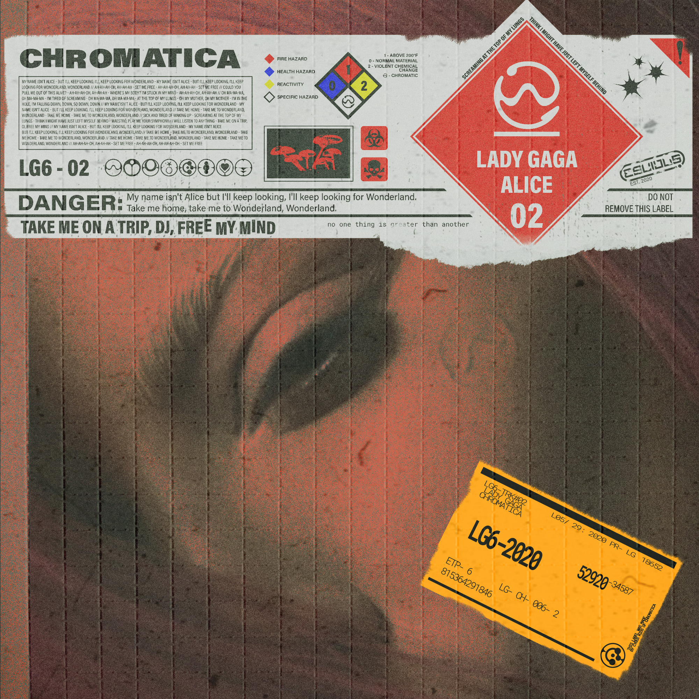

CHROMATICA was a shift in pop music of 2020. Lady Gaga's 6th studio album encapsulated a cyberpunk-ish themed and created realistic imagery of the future and combining apolcalyptic themes with current events today. For this project, the challenge was mixing futuristic ideas with vintage tones. Heavily inspired by psychedelic art of the 60s/70s, movie posters of the 80s, and grunge textures of the 90s.

Chromatica I
Track 1

Alice
Track 2

Stupid Love
Track 3

Rain On Me
Track 4